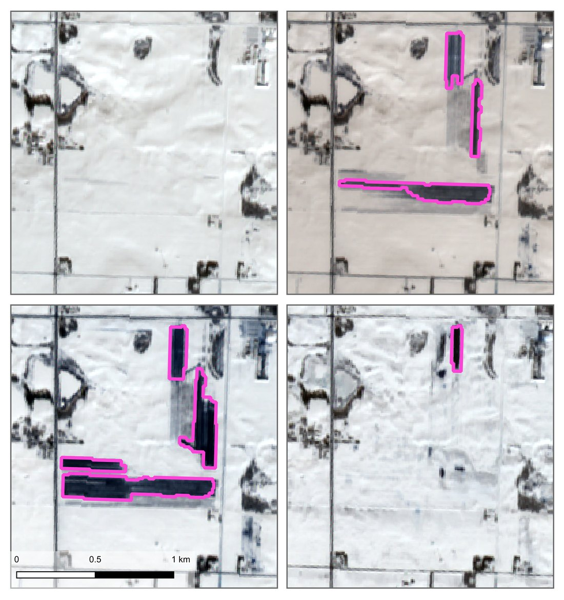

Geospatial Data Science · Remote Sensing · Environmental Monitoring
Manure Spotter
A peer-reviewed Google Earth Engine tool written in Python that detects livestock-waste spreading on snow-covered cropland from free satellite imagery. Built and validated across three Wisconsin regions, it turns public Sentinel-2 and Landsat data into an open monitoring tool for agencies, nonprofits, scientists, and the public.
View project